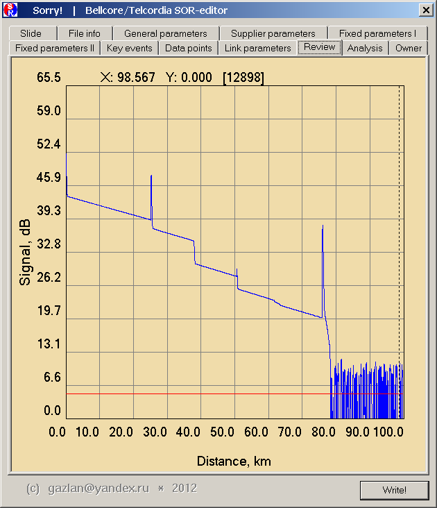

| Sorry! |
|
|

|
Sorry!
|
|
|
| Sorry! news |
|---|
2018-04-30
- Howto pages updated
- Saving 'ExfoNewProprietaryBlock 01' block BUG fix
- АнтиПлагиат: SOR Editor support page
|
|
| Sorry! features |
|---|
- Sorry! is the world’s first interactive SOR-editor for OTDR trace files
- Flexible file access: opens a single SOR file either through the menu, using drag-n-drop or as a command line argument. Browses all files in one folder as slide-show sequence, going forward and back. Multi-level zoom allows insight into any segment of a trace
- Extremely fast file opening and rendering
- Includes specialized 2D editor for interactive trace editing
- Supports high resolution printing from within the 2D editor (including virtual printers e.g. PDF/DJVU printer)
- Perform trace loss calculation using 2PA or LSA methods
- Includes two methods of trace loss correction: Splicing and Shifting, performed using either auto-correction, manual correction or mouse-based interactive editing
- Built-in calculator (supporting math functions and order-of-operations parentheses) in the 2D editor. Marker positions can be used as pseudo variables
- Full access to read/write all parameters within all standard SOR file blocks
- Extensive compatibility: supports all SOR formats and versions
- Supports three methods of checksum calculation: CCITT (Bellcore/Telcordia standard), XMODEM (Yokogawa Emulator), JDSU (Emulator)
- Allows binary dump of any SOR file block (ex. DataPts)
- Saves time with batch template insertion into text fields (General and Supplier tabs)
- Supports plug-Ins (currently in alpha stage)
- FREE Open Sorry! API and SDK are available (see NULL plugin example)
- Extremely efficient and compact, consists of a single .EXE file
- Offline and autonomous - no requirements for any database server or internet connection
- No dependencies on extra libraries, DLL files, COM or .NET
- Portable: no interaction with the Windows registry
- Corporate licenses allow use by an unlimited number of employees on an unlimited number of computers
|
|
| Sorry! это: |
|---|
- Первый в мире интерактивный редактор рефлектограмм
- Гибкие режимы просмотра. Одиночный файл рефлектограммы может быть открыт через меню, перемещен мышью (drag-n-drop), передан как аргумент командной строки. Все файлы в каталоге могут быть последовательно просмотрены в режие "Slide-Show" в прямом и обратном направлении. Multi-Zoom любого участка трассы
- Исключительно высокая скорость просмотра. Sorry! визуализирует рефлектограммы быстрее, чем вы перетаскиваете их мышкой :-)
- Специализированный 2D-редактор для визуального интерактивного редактирования трассы
- Печать окна 2D-редактора, в том числе, на виртуальный принтер. Например, если установлен PDF- или DJVU- виртуальный принтер, полная рефлектограмма или любой ее выбранный фрагмент могут быть сохранены в этом формате с высоким разрешением
- Расчет затухания участка трассы методом двух (2PA) и четырех (LSA) курсоров
- Два метода корректировки затухания на ивенте: Splicing и Shifting. Выбор между автоматическим расчетом, заданием поправок вручную и интерактивным редактированием - "легким движением мыши"
- Встроенный скобочный однострочный калькулятор с возможностью использования параметров установленных в 2D-редакторе маркеров как значений псевдопеременных
- Полный доступ на чтение и редактирование ко всем параметрам стандартных блоков SOR-файла
- Исключительная стабильность. Поддержка всех версий SOR-формата. Sorry! открывает и редактирует даже те SOR-файлы, на которых "падают" другие программы
- Три метода расчета контрольной суммы SOR-файла: CCITT (Bellcore/Telcordia standard), XMODEM (Yokogawa), JDSU (полная совместимость, включая эмуляцию обнаруженного в их программах BUG'а)
- Дамп (как бинарного объекта) любого блока SOR-файла (например, DataPts)
- В один клик - обновление текстовых полей (вкладки General и Supplier) по шаблону
- Поддержка плагинов (alpha stage) - напишите свой собственный обработчик SOR-файла
- FREE Open Sorry! API. Sorry! SDK и пример плагина входят в поставку
- Исключительно компактен. Легко умещается на дискете 360 Kb 5.25" :-)
- Автономная работа - не требует подключения к серверу или интернет
- Отсутствие зависимостей: не требует установки сторонних библиотек, не использует COM, или .NET
- Портативность - ничего не пишет в реестр, все настройки сохраняются в директории программы
- Корпоративная лицензия: может быть использован неограниченным числом сотрудников на неограниченном числе компьютеров
|
|
(Required WinRar 5.xx version for unpacking)
|
|
Sorry! - Demo version |
233,566 |
Sorry! - Interactive SOR-files editor (Bellcore SOR 1.xx / Telcordia SOR 2.0).
Sorry! facts: Ultra compact. Ultra fast. Ultra power. No COM. No NET. No dependencies.
Уникальный исключительно быстрый вьювер и интерактивный редактор рефлектограмм в формате SOR с полным доступом на чтение / редактирование / запись к любому полю
SOR-файла, включая конструирование и модификацию трассы.
Archive password: sorry
Поддерживает все стандартные блоки файлов формата SOR 1.00, SOR 1.10
(
Bellcore GR-196-CORE) и SOR 2.00, SOR 2.10 (
Telcordia SR-4731) и информирует о любых дополнительных (проприетарных) блоках, добавленных производителем рефлектометра или программами обработки рефлектограмм и возможных отклонениях формата от стандарта.
AV note: |
| Some AV have erroneously detect on the Upack packer. You can check on VirusTotal - it's clean. |
| Archive MD5 hash: 2018-04-29 22:06:25 E23AD327705A1B2F447ACFC65795FFE8
|
|
|
Sorry! - Full version |
2,652,662 |
Sorry! - Interactive SOR-files editor (Bellcore SOR 1.xx / Telcordia SOR 2.0).
(только для зарегистрированных пользователей)
Archive MD5 hash: 2018-04-29 21:46:14 457D0DC87390997158C3098CCB1600DB |
|
Sorry! dox |
|
Описание интерфейса программы
Формально, .SOR-файл - это serialized multiway tree.
Но не ищите этих слов в документации, их там нет. Возможно, инженеры Tellcordia (первоначального разработчика формата)
и вовсе не оперировали категорией ADT, и это одна из причин, почему формат с более чем десятилетней историй все еще так плох и невнятен.
|
|
Sorry! SDK (alpha) |
3,056 |
Sorry! SDK
Создайте свой собственный Sorry! plugin. |
|
Sorry! NULL plugin |
12,459 |
Sorry! SDK part
Минимальный ("пустышка") NULL Sorry! plugin. Полный демонстрационный проект (MSVS 6.0) |
|
Comics: Splicing |
1,359,055 |
Сплайсинг в картинках. Просто как 1-2-3 ! |
|
| Sorry! - Работа с калькулятором |
|
|
Для удобства расчетов, связанных с параметрами ивентов, вкладка EventInfo
снабжена встроенным однострочным калькулятором, способным выполнять четыре
основных арифметических действия (сложение/умножение/вычитание/деление) и
вычисление нескольких часто используемых функций. |
| Sorry! - Работа с программой и вопросы для обсуждения |
|
|
Поскольку SOR-формат допускает хранение нестандартных блоков
проприетарного формата с информацией от вендора, Sorry! использует эту
возможность для добавления собственного блока, в котором сохраняет
некоторую информацию, в первую очередь, созданный пользователем
комментарий (произвольный текст). Этот комментарий доступен на вкладке
Owner и позволяет сохранять вместе с SOR-файлом его описание |
| Использование сплайсинга для редактирования трассы |
|
|
Метод сплайсинга наилучшим образом подходит для устранения нежелательных
рефлективных ивентов |
| Compatibility options |
|
|
Известные проблемы совместимости |
| Sorry! SDK |
|
|
Sorry! SDK - сервисные функции библиотеки Sorry!, доступные для вызова из пользовательских plugins |
|
| Test Drive |
|
Demo-версия программы не имеет возможности редактирования коллекций.
Если, после опробывания Demo, у вас остались сомнения в том, как рефлектограмма,
отснятая вашим рефлектометром, будет смотреться в вашем любимом вьювере после
редактирования трассы, можете запросить "Test Drive" - просто пришлите ваш
SOR-файл с указаниями в каком месте и как желательно отредактировать трассу.
Обратной почтой вы получите отредактированный вариант.
P.S.
Не пишите с адресов mail.ru (я не смогу вам ответить; подробнее см. ниже)
|
|
|
|
| BUG Reports |
|
Если вы нашли ошибку:
- Убедитесь, что у вас скачана последняя версия программы
- Что ошибка не связана с ограничениями DEMO-версии
- Что вы не пишете с адресов mail.ru (я не смогу вам ответить; подробнее см. ниже)
- Пришлите описание проблемы - достаточно подробное, чтобы я мог
воспроизвести ее у себя. Добавьте все, что может помочь в локализации проблемы:
текст сообщения об ошибке, файл crash_report.txt (если он был создан), снимки экрана, распечатку отчета итп.
- Приложите сам проблемный SOR-файл (или, в случае редактирования два
SOR-файла - оригинальный и отредактированный)
- Если проблема возникает при использовании отредактированного SOR-файла
в сторонней программе, может потребоваться сама эта программа (если у меня нет
той же версии, что и у вас)
Написать
|
|
|
|
|
|
|
|
|
TRIAL
Ограниченные платные версии |
TRM® 2.0 - Test Results Manager PC software v2.0
http://www.aflglobal.com
http://www.aflglobal.com/Resources/Software.aspx
http://www.aflglobal.com/software/testinspection/TRM-2-0/TRM-20-0701_RevB_v2.0.1.exe
|
Еще несколько программ для обработки рефлектограмм можно найти в файловом разделе на сайте компании "Оптические технологии"
http://svarka-optiki.ru
[ registration need ]
|
|
ПЛАГИАТ: SorEditor
|
АнтиПлагиат: SOR Editor support page
|
OFFTOPIC
|
Переписка
MAIL.RU
Все просто - не используйте.
Если вы напишете мне с адреса mail.ru (или любого другого их домена),
я не смогу вам ответить. Все письма, отправляемые адресатам mail.ru
возвращаются обратно с пометкой "Недоставленное сообщение" и, примерно,
таким текстом:
> This is the mail system at host yandex.ru.
>
> I'm sorry to have to inform you that your message could not
> be delivered to one or more recipients. It's attached below.
>
> Please, do not reply to this message.
>
>
> <***@mail.ru>: host mxs.mail.ru[94.100.176.20] said: 550 spam message rejected.
> Please visit
> http://help.mail.ru/notspam-support/id?c=dr1Vlv6liVdnHN_umSHPS0umg0g2uX_wqxctu0MDWWyLGDrsGETyLwEAAAB_PgAAdmFQHQ~~
> or report details to abuse@corp.mail.ru.
Так вот, - я не стану рапортовать в abuse.
I'm Sorry!
Я просто не хочу иметь с ними дела.
|
|
© Gazlan 2012-2018 * gazlan@yandex.ru
|